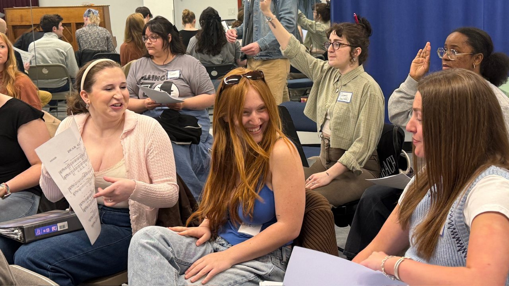
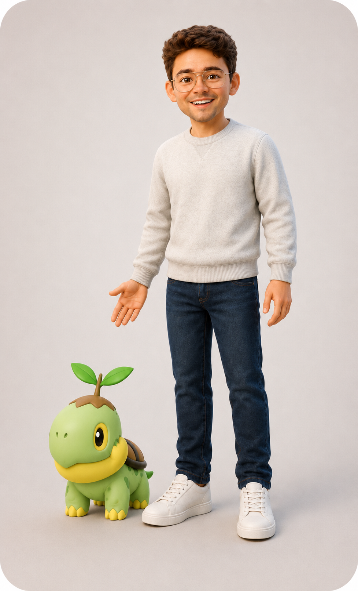

Digital experiences
Websites
I design and build clearer websites with better navigation and visitor paths.
See examplesAndrew Wolverton • Creative producer & builder
I build websites, edit audio and video, make music, and create practical systems. Bring the idea, references, or rough direction. I’ll help make it work.
What I do
See work I’ve already done, then decide what you want to build.
Digital experiences
I design and build clearer websites with better navigation and visitor paths.
See examples
Social posts and campaigns
I edit campaign videos and social content for shows, classes, launches, and promotions.
See social media examples
Sound and recordings
I turn songs, references, and creative direction into clean edits, mixes, and performance-ready audio.
See examples
Audience-ready media
I edit showreels, performance videos, band promos, campaign videos, and personal projects.
See examples
Performance
I perform solo and with Rooftop Ramblers for venues, events, and programs.
See examples
Local support
I research locations, vendors, and options on the ground in New York City.
See examplesSelected work
Real projects for festivals, nonprofits, businesses, and creative teams.
Web and UX
I redesigned a growing festival site around clearer mobile navigation, artist discovery, and a lineup structure built to grow.
See the web case study ↗︎
Founding partner and nonprofit leadership
As a founding partner, I’ve helped build the programs, fundraising, governance, communications, and systems behind the nonprofit.
Explore the nonprofit build ↗︎
B2B web strategy
I reorganized the B2B site around the product, sourcing, application, and inquiry questions commercial buyers need answered.
See the buyer experience ↗︎
AI and workflow systems
I build research, outreach, audit, and planning systems that save time while keeping final judgment human.
See the workflow examples ↗︎

Meet Andrew
I’ve spent my career building across websites, campaigns, audio and video, organizations, events, teaching, and workflows. That range lets me connect the creative and practical pieces instead of handing you from person to person.
A few rooms and roles

Indiana University and the Singing Hoosiers were where performance, community, and long-term creative relationships first came together.

Alumni service grew from communications into fundraising, governance, relationship-building, and organizational leadership.

Bands and community performances kept the work social, practical, and connected to the people in the room.

Performing taught me timing, presence, preparation, and how to adjust when the room gives you new information.

In Lafayette, teaching and theatre work expanded into civic leadership, partnerships, and programs built with the community around them.

Theatre-making is collaborative systems work. Every cue, role, handoff, and relationship affects what the audience experiences.

Teaching theatre and choir made communication, structure, empathy, and practical problem-solving part of the work every day.

Commercial theatre sharpened my understanding of how creative ideas, audiences, marketing, and production decisions fit together.

Serving as an Associate Producer for Kathleen Turner: Finding My Voice at Town Hall connected arts management training to professional New York producing.

Earning an MA in Arts Management brought fundraising, strategy, leadership, and organizational systems into the same creative practice.

Live music continues to shape how I think about rhythm, clarity, responsiveness, and participation.

Directing and producing means creating enough structure for a full group of people to do ambitious work together.

Playing in busy rooms keeps the work grounded in audience energy, spontaneity, and connection.

Discovery Sound Garden
I’m a founding partner of Discovery Sound Garden, creating more welcoming paths into music learning, recording, performance, and creative community. I’ve helped build the programs, curriculum, governance, fundraising, brand, marketing, partnerships, and operating systems behind the organization.
Try the studio
Build a phrase, or choose a song.
Interactive music lab
Play a guided phrase, build a short arrangement, or open the full desktop workstation.
Start Music LabArtist recordings
Listen to vocals, arrangements, and musical performance without leaving the portfolio.
How I work
You bring the direction. I keep the process clear, make the pieces work together, and refine the result with you.
Understand the audience, the real problem, what already exists, the constraints, and the outcome that matters.
Organize priorities, content, pathways, dependencies, and the smartest version to build first.
Build the website, campaign, edit, performance plan, or working system in a usable environment.
Refine the details with you while checking clarity, accessibility, playback, responsive behavior, and reliability.
Deliver something you’re happy to use, with a clear handoff and notes for making the next version even better.
Frequently asked questions
Projects vary, but the working relationship should not feel mysterious.
Arts and cultural organizations, nonprofits, festivals, music and education programs, independent creative teams, and mission-driven small businesses that need clearer digital work and practical systems.
Yes. A clarity sprint, audit, prototype, or first-phase build can create a useful stopping point before a larger engagement. Phased scopes are especially useful when content, approvals, or funding are still developing.
No. AI is used to extend research, organization, drafting, testing, and production capacity. Strategy, source checking, design direction, quality control, and final approval remain human-led.
No. Bring the idea, references, screenshots, songs, notes, or rough direction you already have, plus any deadline or budget limits. We can shape the scope from there.
Usually, yes. They are separate engagement types with different timelines and production needs, though a combined event, campaign, or performance-media package can be scoped together.
Get in touch
Send the service, deadline, and budget you have in mind. A rough outline is enough.
